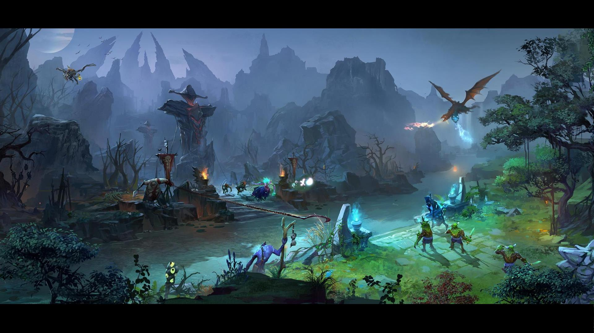

中路河道
At Mozilla, we're a global community of technologists, thinkers, and builders working together…
At Mozilla, we're a global community of
working together…
At Mozilla, we're a global community of
At Mozilla, we're a global community of
Mozilla Manifesto